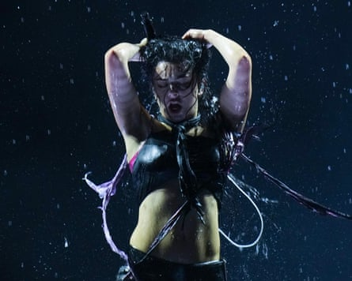

It has puzzled philosophers, scholars and those aspiring to be cool for generations: what is it that makes someone cool? Now it appears that the alchemical code has finally been cracked.
There are six specific attributes needed to be cool, according to a study published this week by the American Psychological Association.
It found that cool people are generally perceived to be extroverted, hedonistic, powerful, adventurous, open and autonomous, according to the survey of 6,000 participants from 12 countries including the USA, Australia and South Africa.
So what does a cool person make of it?
Chris Black, the co-host of the podcast How Long Gone (which is cool) and the founder of Done to Death Projects, a brand consultancy with fashion clients including Stüssy (also very cool), says that while the traits are “relatively accurate” for him, cool is something that cannot be easily outlined. “The je ne sais quoi of the whole thing has always been what I associate with cool,” he says.
Does Black like being described as cool? “It’s become a pretty general word. I don’t think it has the sort of gravitas that it once had. There are things I don’t embody that I think make people cool. So it’s tough to think of yourself as it, no matter how much you want it.”
Philippa Snow, a writer and cultural critic whose latest book, It’s Terrible the Things I Have to Do to Be Me , explores female celebrities and the price of femininity, says trying to define cool is similar to defining charisma. “Like the famous quote about pornography, it’s tempting to say about both that you know it when you see it.”
Some suggest that sprezzatura, an Italian word first used about by Baldassare Castiglione in 1528 and defined as “a certain nonchalance, to conceal all art and make what one does or say appear to be without effort” captures the earliest essence of what cool is.
Cool as a characterisation originated from 1940s jazz culture, when the black musician Lester Young challenged racial norms by refusing to smile when performing. He also used fashion as a marker of defiance, wearing sunglasses indoors on stage. Not long after he coined the slang term “that’s cool”, his fans began to use it when referencing him.
Charli xcx, performing at Glastonbury in June, is still considered cool – despite describing herself as such.Photograph: Scott A Garfitt/Invision/AP
Prof Joel Dinerstein , who has taught a course called The History of Cool at Tulane University, Louisiana, for more than 25 years, says the terms he associates with cool people are “rebellious” and “charismatic”, flagging that another key quality is self-authorisation.
For Black, whose line of work is based around finding cool people to partner with brands, someone “being comfortable with who they are and what they say” is his “real baseline for coolness”. His criteria also includes someone “being very, very good at what they do”, saying it “shows a level of dedication and self-respect that I think is deeply cool”.
While Pierre Bourdieu’s 1970s concept of cultural capital is not directly a theory on coolness, cultural and social assets both play into the notion of cool. Nowadays, social media means being cool is often less about a person and more about an aesthetic that can be carefully curated. Unlike a person, however, as soon as an item becomes mainstream, it is generally no longer deemed cool. See Labubus and Stanley cups .
Conversely, Brat – the cultural phenomenon unleashed by Charli xcx a full year ago – is still considered cool. At Glastonbury , she did something that typically a cool person would never do – describing herself as cool. “Thank you so much, you’re fucking cool as fuck. But not as cool as me, bitch!” she shouted as she wrapped up her set.
Each year, Dinerstein asks his students who they perceive as cool. This year’s answers spanned everyone from the composer Hans Zimmer to the singer Lenny Kravitz.
Snow suggests Rihanna would be considered cool by many millennials. “There’s something so delightfully don’t-care about her becoming one of the biggest musical performers in the world, and then choosing not to give us another album for over a decade. Making us wait and still commanding our attention with not only her other projects but her image itself is powerful and cool, in an almost S&M-adjacent fashion.”
Black says youth will always be cool. “That has fucked us in some ways because we all think we should be at our peak at 23, but as you age you realise it usually takes people to their 50s to work out what they actually like.”
And perhaps, there lies a key point overlooked by researchers. Youths. Speaking to two gen Z-ers, they reveal the word “cool” as an adjective is becoming defunct in their lexicon. In its place? “Sick” and “lowkey”.
Things that are definitely not cool
- ChatGPT
- Pretending not to be “on the pen” (using weight loss jabs) when you are
- Cowboy boots
- Labubus
- Using corporate jargon outside work. For example, posting holiday photos on Instagram with the caption “highlights from Q1”
- Talking about sleep scores
- Giant adult sippy cups
- Birkin bags
- Including your Myers-Briggs Type Indicator result in your dating bio
Things that are cool
- Being a member of a library
- Good service – anywhere
- The Row’s monthly Spotify playlists
- Asking questions
- Restaurants where you don’t have to shout at each another to be heard
- Curaprox’s colourful toothbrushes
- Ordering an object to view at the V&A East Storehouse
- Not being a TV snob
- Using lamps rather than the “big light” in a room
- Being OK with ageing